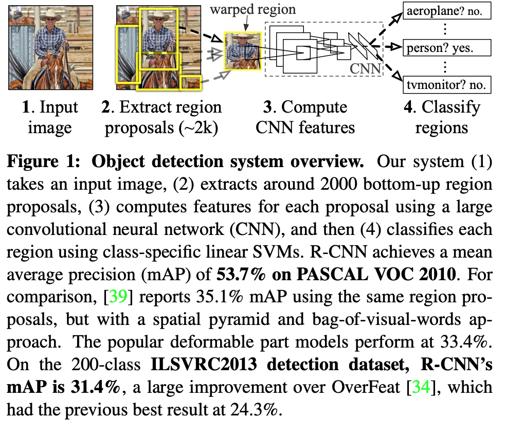

RCNN¶
1. Introduction¶
Challenge 1: localizing object:
- Frame localization as regression problem: does not fare well in practice.
- Sliding window detector: units high up in RCNN have large receptive fields and strides in the input image, which makes the precise localization within sliding window paradigm an open technique challenge.
- RCNN: Operating within “recognition using regions” paradigm.
Steps in test time:
- Generate around 2000 category-independent region proposal for the input image.
- Extract fixed-length feature vector from each proposal using a CNN.
- Categorize each region with category-specific linear SVM.
RCCN use affine image warping to compute a fixed-size CNN input from each region proposal. Over all structure shown below
Challenge 2: labeled data is scarce and amount currently available is insufficient to train a large CNN.
- Unsupervised pretraining, followed by supervised fine tuning.
- Supervised pretraining on a large auxiliary dataset, followed by a domain-specific fine-tuning on small dataset. RCNN uses this method.
Challenge 3: efficiency
The only class-specific computations are reasonably small matrix-vector product and greedy non-max suppression.
2. Object detection with RCNN¶
2.1 Module design¶
Region Proposal available method:
- objectness
- selective search (used in RCNN)
- category independent object proposals
- constrained parametric min-cut
- multi-scale combinatorial grouping
Feature extraction: RCNN extract 4096 from each region proposal. Features are computed by foward propagating a mean-substracted RGB image through five conv layer and 2 fully connected layer.
2.2 Test-time detection¶
- RCNN runs selective search on the test image to extract around 2000 region proposal.
- Warp each proposal into same size.
- Forward propogate through a CNN in order to compute features.
- For each class, we score each extracted feature vector using SVM trained for that class.
- Given all scored region in an image, we apply a non-max suppression (for each class independently) that reject region if it has IOU overlap with a higher scoring selected region larger than a learned threshold.
Two propertied make the computation efficient:
- All CNN parameters are shared accross all categories.
- Feature vector computed by CNN are low dimension when compared with other common approaches.
The feature matrix is typically 2000 * 4096 and the SVM weight matrix is 4096 * N where the N is number of classese.
2.3 Training¶
Pretrain the CNN on a large auxiliary dataset using image level annotation.
Continue stochastic gradient descent training of the CNN parameters using only warped region proposal.
- Replace the CNN’s ImageNet-specific 1000-way classification layer with randomly initialized (N+1)-way classfication layer with randomly initialized (N+1)-way classification layer (N + 1=number of object classes + 1 for background)
- CNN architecture is unchanged.
- Treat all region proposal with >= 0.5 IOU with ground truth bounding box as positive for the box’s class and the rest as negative.
- Start SGD at a learning rate of 0.001 (1/10th of the initial pretaining rate). It allows fine-tuning to make progress without clobbering the initialization.
- In each SGD iteration, we uniformly sample 32 positive window (over all classes) and 96 background window to construct a minibatch of size 128. We bias the sampling towards positive window because they are extremely rare compared to background.
Object category classifier
- How to label a region that is partially overlaps a car: threshold IoU. The threshold 0.3 is selected by grid search over {0, 0.1, …., 0.5}. Positive examples are defined simply to be the ground truth bounding boxes for each class.
- Once features are extracted and training labels are applied, we optimize one SVM per class. Since the training data is too large to fit into memory, we adopt standard hard negative mining method.
3 Visualization, ablation and mode of errors¶
3.1 Visualizing learned features¶
First-layer filter can be visualized directly are easy to understand. They capture oriented edges and opponent colors. Understanding the subsequent layer is more challenging. The idea is to single out a particular unit (feature) in the network and use it as if were an object detector in its own right. We compute the unit’s activation on a large set of held-out region proposal, sort the proposal from the highest to lowest activation, perform non-maximum suppresion and then display the top scoring region. The model lets the selected unit “speak for itself” by showing exactly which input it fires on.